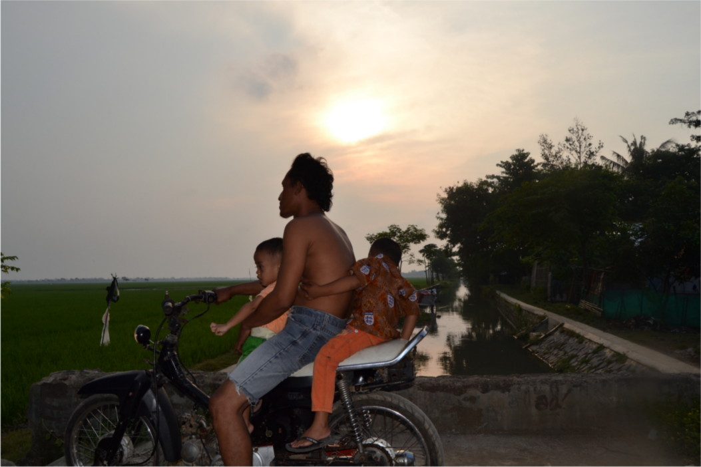
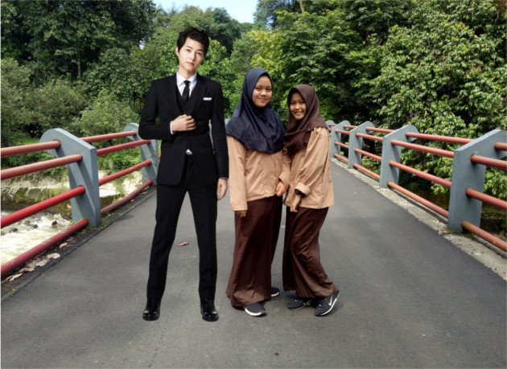
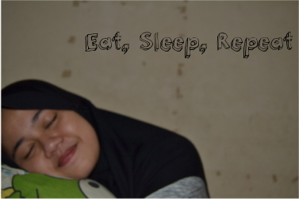

Davina Putri
Bogor High School Of Chemical Analyst
Bogor, Id
davinaput2210@gmail.com
+6289651972455
Hobbies
Sleep
Photography
Swimming
Fangirling
Languages
Bahasa
English
Japan
About Me
Hi Guys. Let me tell u about my self. My name is Davina Putri and u can call me davina,vina or etc. I was born in Bekasi 22nd october 2001 with enough Oxygen. I studied at Bogor High School Of Chemical Analyst. And u can read all about me in this page.
Education
Bogor High School Of Chemical Analyst
June 2016 - Current
The school that makes my sleep schedule less than 8 hours in 1 day. But i still love that school
Bogor Lower Secondary of Islamic School
2013 - 2016
Master Degree
School of Coding
NEVER
Study about coding in High School of Chemical Analyst is just like a...
The Pictures Of my Hobbies
This is the one of my creation in Photography. Not good enough maybe, but this picture reminds me of my father that i love the most. By the way, bapaknya gak sadar kalo aku lagi fotoin dia. Aku ngambil foto itu dekat rumah nenek, ngamblya di atas jembatan gitu. Waktu otw ke jembatannya, aku sok2an nge gantung kameranya di pundak, yaudahlah itu kameranya jatoh ke aspal beton. Untungnya lensanya ga lecet atau pecah.
Dari kelas 6sd udah seneng banget nge-fangirl. And This is me and my boyfriend, Jimin Oppa. We look like milk and coffee. We took this photo in cafe at Seoul ya hahaha

And This One is the picture of Joongki Oppa, Bunga and Me at Bogor Botanical Garden
Dan ini foto paling ter-So imut in my life. Caritana mah keur sare
Hm, aku gapunya foto lagi berenang bcs aku kalau berenang lepas kerudung jadinya malu kan kalo difoto hee.